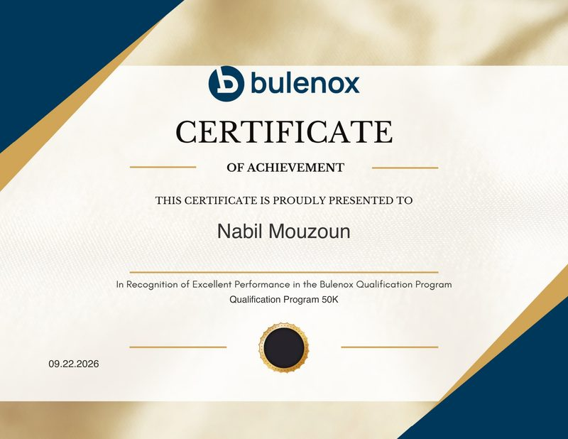

NM / PROFILE & FUNDAMENTALS
The fundamentals
My education, experience, skills and languages, with my certificate on file.
1.0 Who I am
I'm Nabil, a finance student from Ifrane, Morocco, and I live in Manhattan. I started my degree at Al Akhawayn University and spent 2024 on a J-1 exchange at Monroe University in New York, where I made the Dean's List. I then transferred to Mercy University to finish my B.S. in Business Administration with a concentration in Finance; I have made the Dean's List in both semesters there, and my GPA is 3.93.
I intern at High Quality Home Therapy, where I look after the software that tracks the practice's patient records. Last summer I did market research for a digital-asset trading firm, and on evenings and weekends I work on the projects in the coverage universe.
Next I plan to earn a graduate finance degree in New York, then join a research or analytics desk.
Exhibits
DOCUMENTS ON FILE · CLICK TO OPEN
EXHIBIT A · CERTIFICATE ON FILEVIEW ↗EXHIBIT A
Trading qualification: Bulenox, 50K program
Bulenox is a futures trading firm that funds traders who get through its evaluation. In that evaluation, the Qualification Program, a trader has to reach a profit target while staying inside the firm's risk rules. Bulenox gave me this Certificate of Achievement “in recognition of excellent performance in the Bulenox Qualification Program” on a 50K account.
The program tests how a trader sizes positions and respects loss limits, which a trading desk also checks before it hires.
- ISSUER
- Bulenox, a futures trading firm
- PROGRAM
- Qualification Program · 50K account
- AWARDED
- 22 September 2026
- DOCUMENT
- Certificate of Achievement · PDF, 1 page
Education timeline
▲ = DEAN'S LIST| Period | Institution | Program | Distinction |
|---|---|---|---|
| 2025–2026E | Mercy University · New York | B.S. Business Administration, concentration in Finance · GPA 3.93 / 4.00 · expected December 2026 | ▲ Dean's List |
| MAR–DEC 2024 | Monroe University · New York | J-1 Exchange: business coursework on U.S. market dynamics | ▲ Dean's List |
| 2021–2025 | Al Akhawayn University · Ifrane | Business Administration coursework, with credits transferred to Mercy | ▲ Dean's List |
RELEVANT COURSEWORK · STUDENT-MANAGED INVESTMENT FUND · INVESTMENT MANAGEMENT · FINANCIAL STATEMENT ANALYSIS
Experience ledger
| Period | Seat | Where | The work |
|---|---|---|---|
| SEP 2026 TO NOW | Management & Technology Intern HIGH QUALITY HOME THERAPY |
STAMFORD, CT | I develop and maintain the internal software that tracks the practice's patient records. I edit short educational videos with its Doctor of Physical Therapy, and I support the practice's management on administrative and technology projects. |
| 2025 TO NOW | Intl. Education Consultant CHINA GLOBAL STUDY |
REMOTE | I advise students and families from the first question to enrollment and work with partner universities in China. Full case: NM-04. |
| 2023–24 | Co-Founder & Digital Strategist DESIGN-MALL |
MOROCCO | I helped launch a digital marketplace, ran its growth on social media and pitched it to the jury that picked it for the Top 50 University Startups. Full case: NM-02. |
| 2022–24 | Treasurer MICHLIFEN GOLF & COUNTRY CLUB |
IFRANE | I managed the budget and monitored expenses, set up cost-tracking routines that reduced spending, and prepared financial summaries for the club's leadership. |
PROJECT WORK, INCLUDING A SUMMER OF MARKET RESEARCH FOR PROMETHEUS TRADING (NM-05), IS UNDER COVERAGE →
Instruments & languages
| Desk | Instrument | Where I use it |
|---|---|---|
| MARKETS & FINANCE | Financial statement analysis | Coursework at Mercy. I read a company's statements before I form a view. |
| Investment analysis | Student-Managed Investment Fund and Investment Management coursework at Mercy | |
| Market research & reporting | Weekly market reports, signal briefs, and competitor benchmarking for a trading firm (NM-05) | |
| Futures trading under risk limits | Bulenox Qualification Program, 50K. The certificate is on file as Exhibit A. | |
| Budgeting & cost control | Treasurer of a golf and country club, 2022–24: budgets, expense monitoring, financial summaries for leadership | |
| DATA & ANALYTICS | Advanced Excel | Budgets, cost trackers and the tables behind my reports |
| SQL | Querying and joining datasets before they reach the spreadsheet | |
| Python (pandas) | The Signals Toolkit (NM-03): pulling series, computing averages, flagging crossovers | |
| Data visualization & business statistics | Charts and summaries for the people who read my reports | |
| AI & TECHNOLOGY | Generative AI & prompt engineering | ChatGPT and Claude as working tools; the AI workflow behind Hope's Assistant (NM-01) |
| AI workflow automation | I turn repeated office work into software that runs on a schedule (NM-01) | |
| Web app development | Internal tools, including the patient-records software I maintain at my internship | |
| Video editing | Short-form educational videos for a practice's social channels | |
| Word & PowerPoint | Reports and decks for internal stakeholders |
Governance & community
UNPAID WORKEND OF REPORT
Certificates and references
on request.
Markets · Research · Analytics · New York City